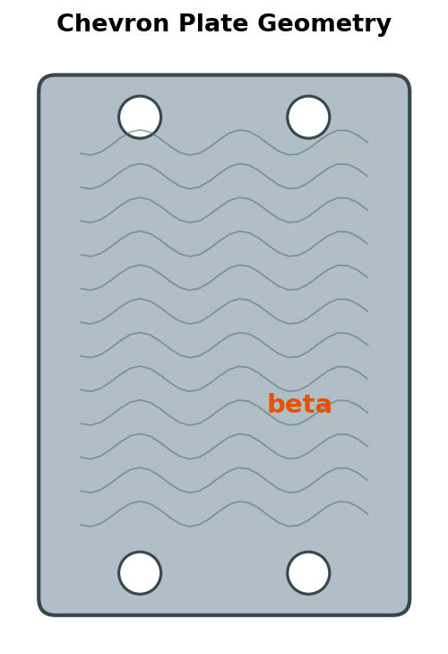
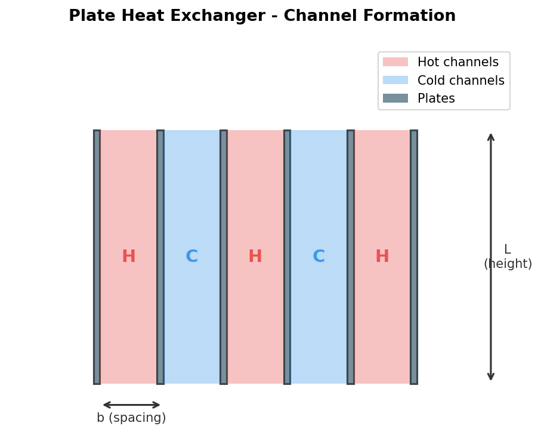
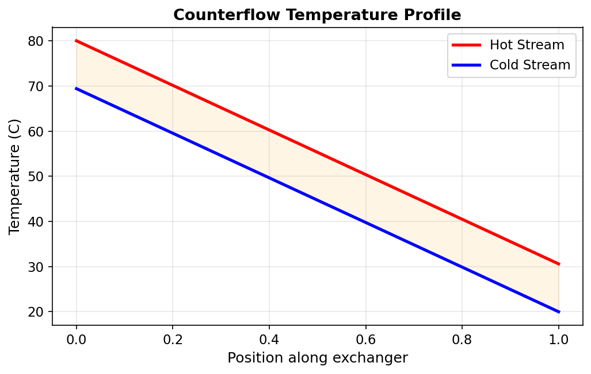
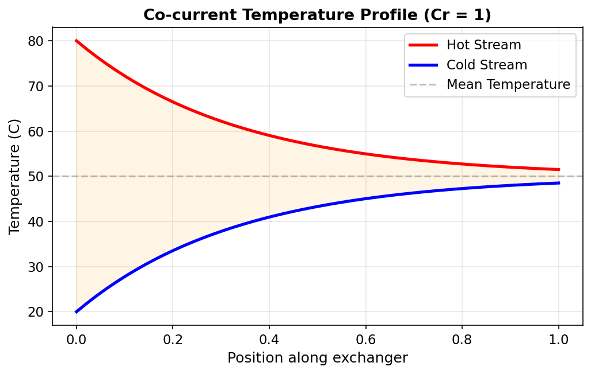

Fundamentals¶
Overview¶
Plate heat exchangers (PHEs) are compact, high-efficiency heat transfer devices in which thin corrugated metal plates are stacked to form alternating flow channels for the hot and cold fluids. Compared with conventional shell-and-tube exchangers, PHEs offer significantly higher heat transfer coefficients per unit volume, lower fouling tendency, and easier maintenance through disassembly of the plate pack (Shah & Focke, 1988).
This unit operation models a single-pass, single-phase PHE with chevron-corrugated plates operating in either counterflow or co-current arrangement. The solver determines the heat duty, outlet temperatures, and pressure drops from the specified plate geometry and inlet stream conditions.
Plate vs Shell-and-Tube
PHEs typically achieve overall heat transfer coefficients 3 to 5 times higher than shell-and-tube exchangers for the same duty, owing to the turbulence-promoting corrugation pattern and the thin hydraulic channels. This advantage comes at the cost of a lower pressure rating, which limits PHE use to moderate-pressure applications (Kakac & Liu, 2002).
Plate Geometry and Channel Formation¶
Plate Stack Arrangement¶
A PHE consists of \(N_p\) corrugated plates compressed between two end frames. The plates are sealed by gaskets (or welded) to create alternating channels: odd-numbered channels carry one fluid while even-numbered channels carry the other.
The number of flow channels per side depends on the total plate count:
For an odd number of plates \(N_p\), both sides have equal channel counts: \(N_{ch} = (N_p - 1)/2\).
Hydraulic Diameter¶
The hydraulic diameter of a single corrugated channel is defined as:
where:
- \(b\) — mean plate spacing (distance between adjacent plates), m
- \(\phi\) — surface enlargement factor (ratio of developed corrugated area to projected flat area), dimensionless; typical values range from 1.15 to 1.25 (Martin, 1996)
Enlargement Factor
The enlargement factor \(\phi\) accounts for the additional surface area created by the chevron corrugation pattern. It is defined as \(\phi = A_{\text{developed}} / A_{\text{projected}}\), where \(A_{\text{developed}}\) is the actual corrugated plate area and \(A_{\text{projected}}\) is the flat projected area \(W \times L_p\).


Single-Channel Flow Area¶
The cross-sectional flow area of one channel is:
where \(W\) is the effective plate width (m).
Total Flow Area per Side¶
Single-Channel Heat Transfer Area¶
The effective heat transfer area of one channel is:
where \(L_p\) is the effective plate length (between port centres), m.
Total Heat Transfer Area¶
End Plates
The two outermost plates (frame and pressure plates) transfer heat on only one side. The effective number of heat-transferring plates is therefore \(N_p - 2\). Some references use \(N_p - 1\) for the number of thermal plates; this implementation uses \(N_p - 2\) following the convention of Kakac & Liu (2002).
Mass Velocity¶
The mass velocity (mass flux) through a single channel is:
Reynolds Number¶
where \(\mu\) is the dynamic viscosity of the fluid evaluated at the mean bulk temperature.
Prandtl Number¶
where \(c_p\) is the specific heat capacity and \(k\) is the thermal conductivity of the fluid.
Key Performance Metrics¶
Heat Duty (\(Q\))¶
The rate of heat transfer between the hot and cold streams:
Sign Convention
In this implementation, \(Q > 0\) always represents the magnitude of heat transferred from the hot stream to the cold stream. Energy balance requires \(Q_{\text{hot}} = Q_{\text{cold}} + Q_{\text{leak}}\).
Overall Heat Transfer Coefficient (\(U\))¶
The overall coefficient accounts for all thermal resistances in series between the two fluid streams:
where:
- \(h_{\text{hot}}, h_{\text{cold}}\) — convective heat transfer coefficients (W/m\(^2\)/K)
- \(R_{f,\text{hot}}, R_{f,\text{cold}}\) — fouling resistances (m\(^2\)K/W)
- \(\delta_p\) — plate thickness (m)
- \(k_p\) — plate thermal conductivity (W/m/K)
UA Product¶
Log-Mean Temperature Difference (LMTD)¶
For counterflow:
where \(\Delta T_1 = T_{h,\text{in}} - T_{c,\text{out}}\) and \(\Delta T_2 = T_{h,\text{out}} - T_{c,\text{in}}\).
The design equation relating these quantities is:
Minimum Internal Temperature Approach (MITA)¶
Feasibility Check
If MITA \(\le 0\), the specified conditions imply a temperature crossover which is thermodynamically infeasible.
Thermal Effectiveness (\(\varepsilon\))¶
where \(C_{\min} = \min(\dot{m}_h c_{p,h},\; \dot{m}_c c_{p,c})\) is the minimum heat capacity rate (Kays & London, 1984).
Flow Arrangements¶
Counterflow¶
In counterflow, the hot and cold streams enter the exchanger at opposite ends and flow in opposite directions. This arrangement maximises the temperature driving force along the entire length of the exchanger and allows the cold outlet temperature to approach the hot inlet temperature.

For counterflow, the LMTD is always the largest achievable for given inlet and outlet temperatures, which means the required heat transfer area is minimised.
Co-current (Parallel Flow)¶
In co-current flow, both streams enter at the same end and flow in the same direction. The outlet temperatures of both streams asymptotically approach a common mixing temperature, which limits the thermal effectiveness.

Counterflow vs Co-current
For identical UA and inlet conditions, counterflow always transfers more heat than co-current. Counterflow is the default and recommended configuration. Co-current flow is occasionally preferred when a more uniform wall temperature is needed to avoid thermal stresses or thermal degradation.
Degrees of Freedom¶
For a 2-stream plate heat exchanger in design mode, the specification structure is:
| Category | Specified by User | Calculated |
|---|---|---|
| Inlet conditions | \(T_{h,\text{in}}\), \(T_{c,\text{in}}\), \(\dot{m}_h\), \(\dot{m}_c\), \(P_h\), \(P_c\) | — |
| Geometry | \(N_p\), \(W\), \(L_p\), \(b\), \(\delta_p\), \(\beta\), \(\phi\), \(k_p\) | \(D_h\), \(A_{ch}\), \(A_{\text{total}}\) |
| Fouling | \(R_{f,\text{hot}}\), \(R_{f,\text{cold}}\) | — |
| Flow arrangement | Counterflow or co-current | — |
| Results | — | \(Q\), \(T_{h,\text{out}}\), \(T_{c,\text{out}}\), \(U\), \(\text{UA}\), \(\varepsilon\), \(\Delta P_h\), \(\Delta P_c\) |
The design mode is fully determined once all geometry parameters and inlet conditions are provided. The solver iteratively evaluates fluid properties at average temperatures, computes individual heat transfer coefficients from the Martin (1996) correlation, assembles the overall \(U\), and applies the e-NTU method to determine the outlet temperatures and heat duty.